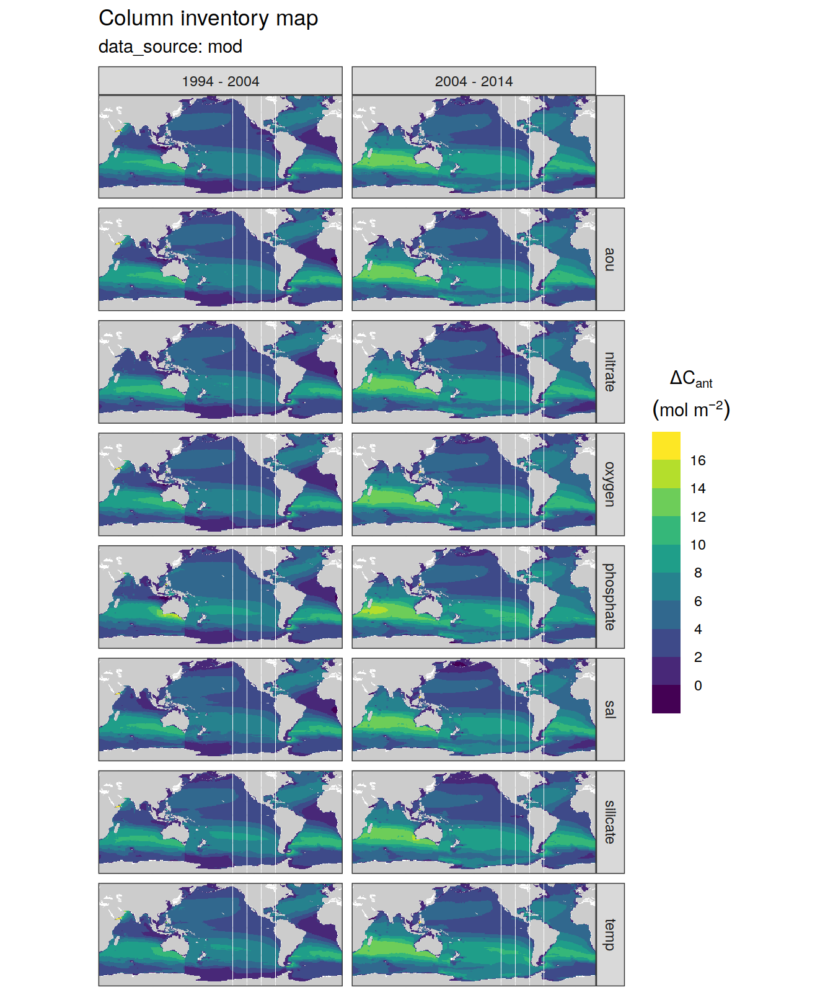
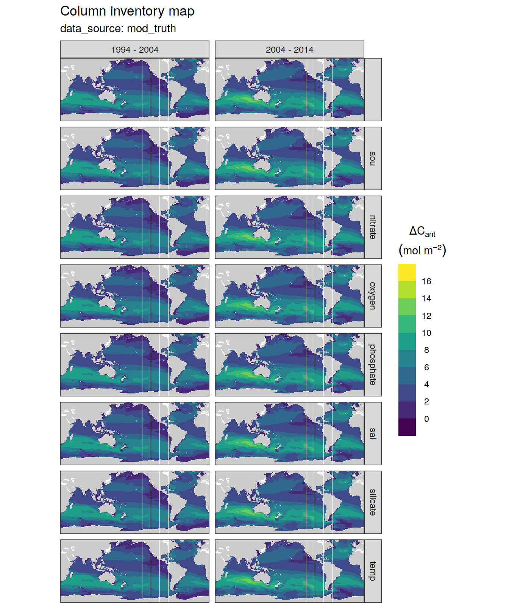
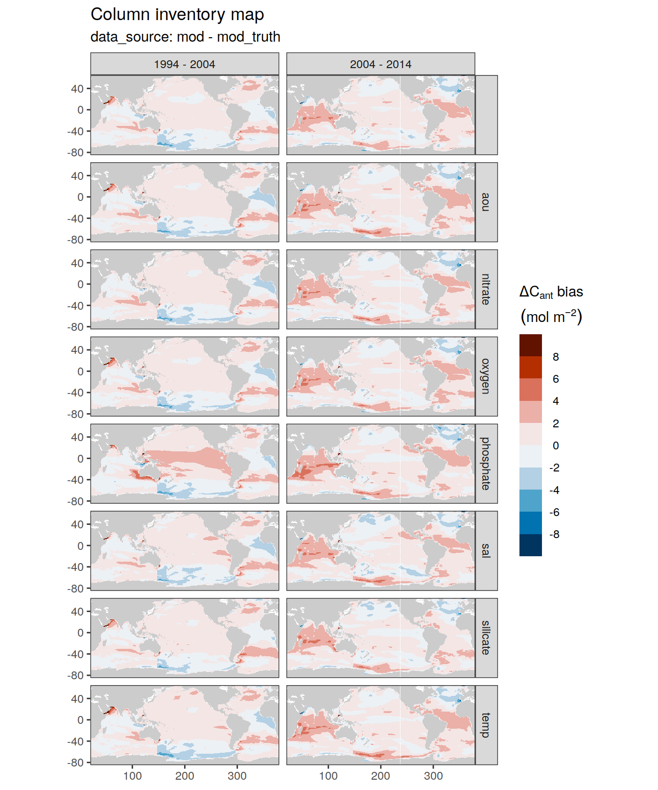
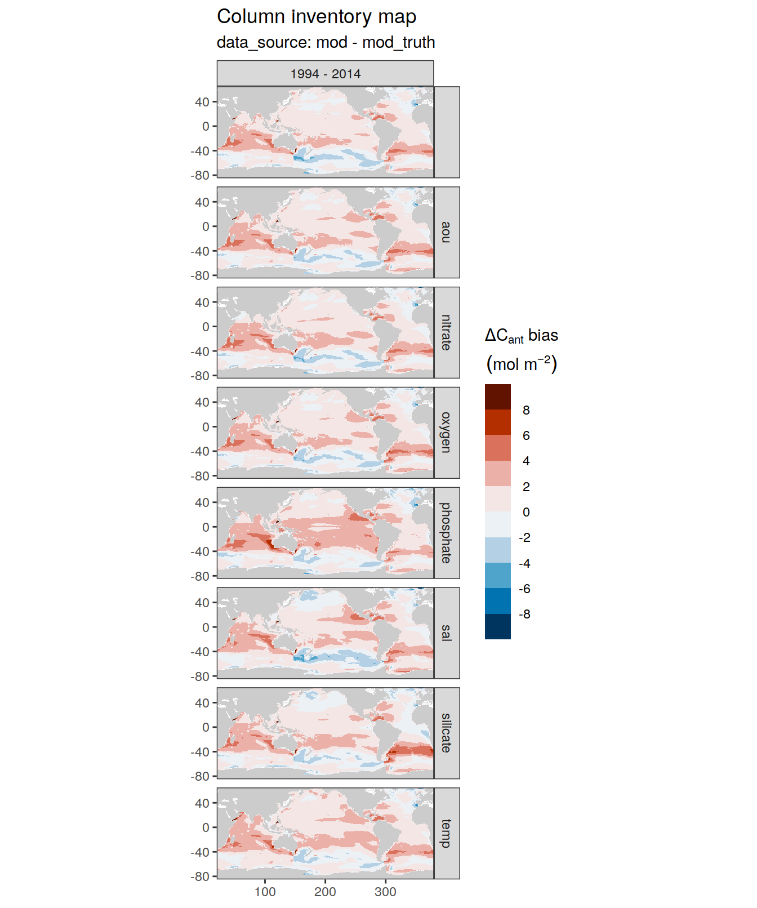
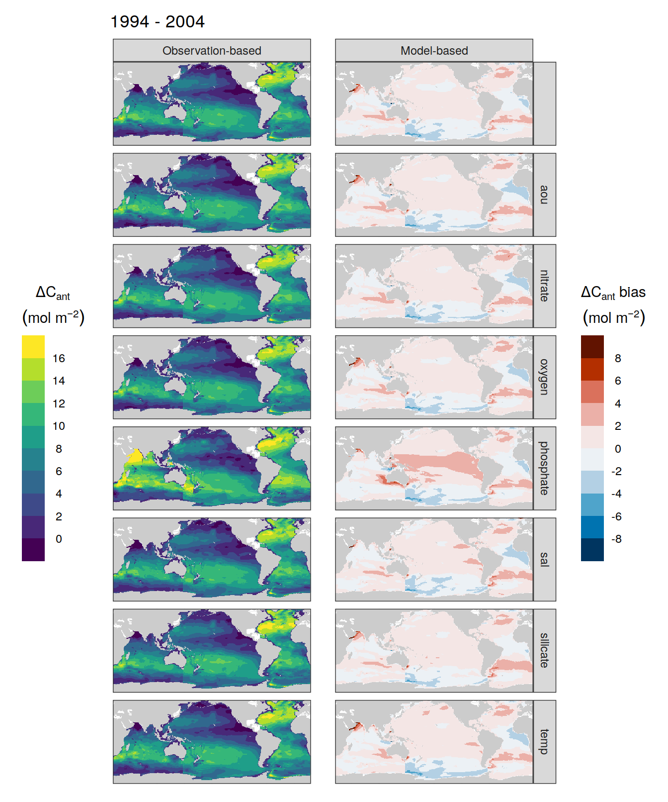
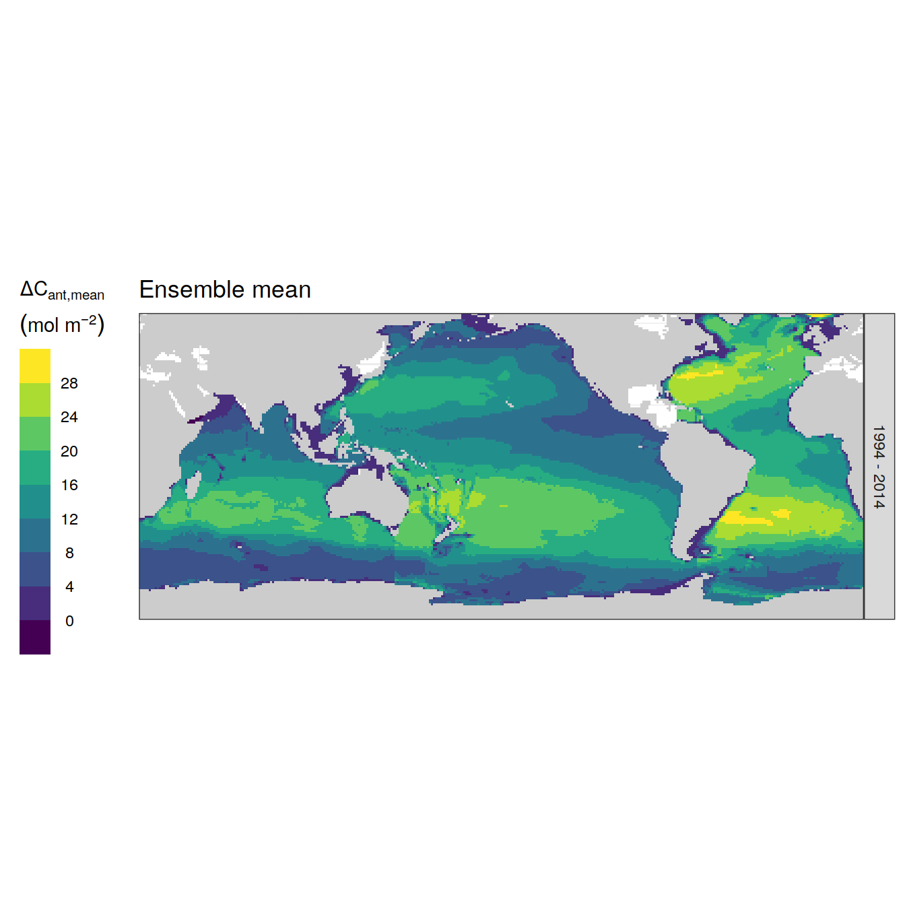
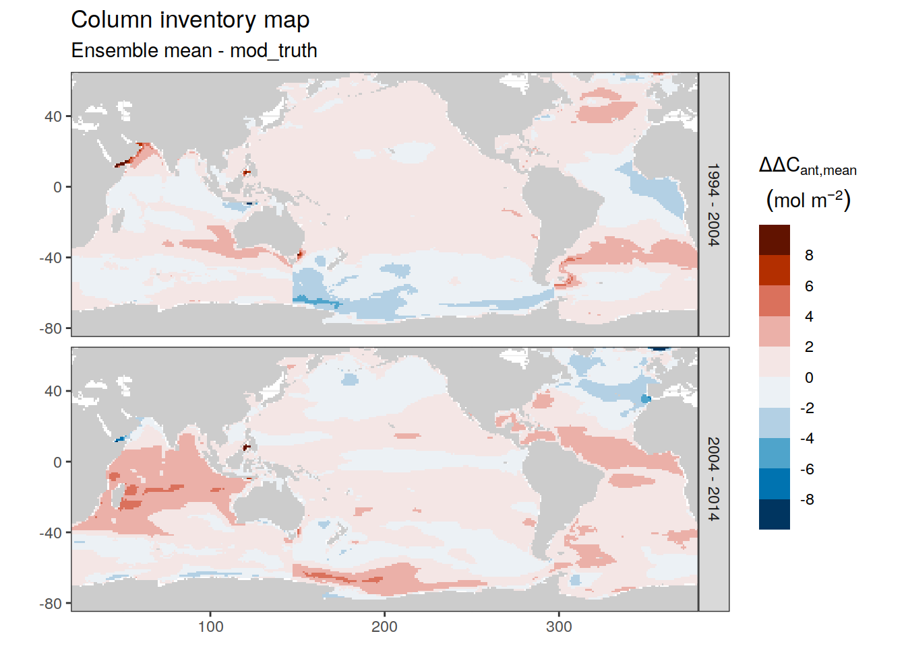
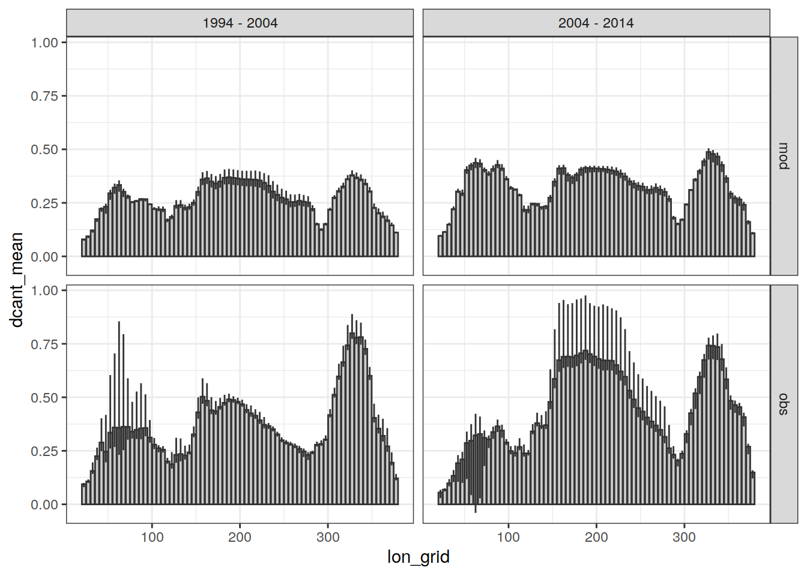
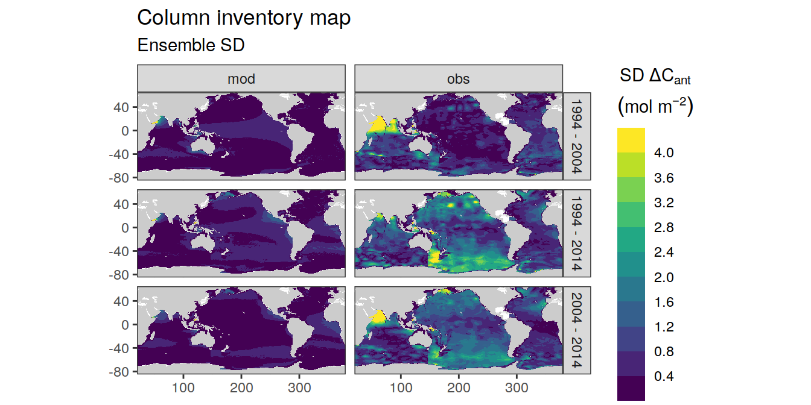
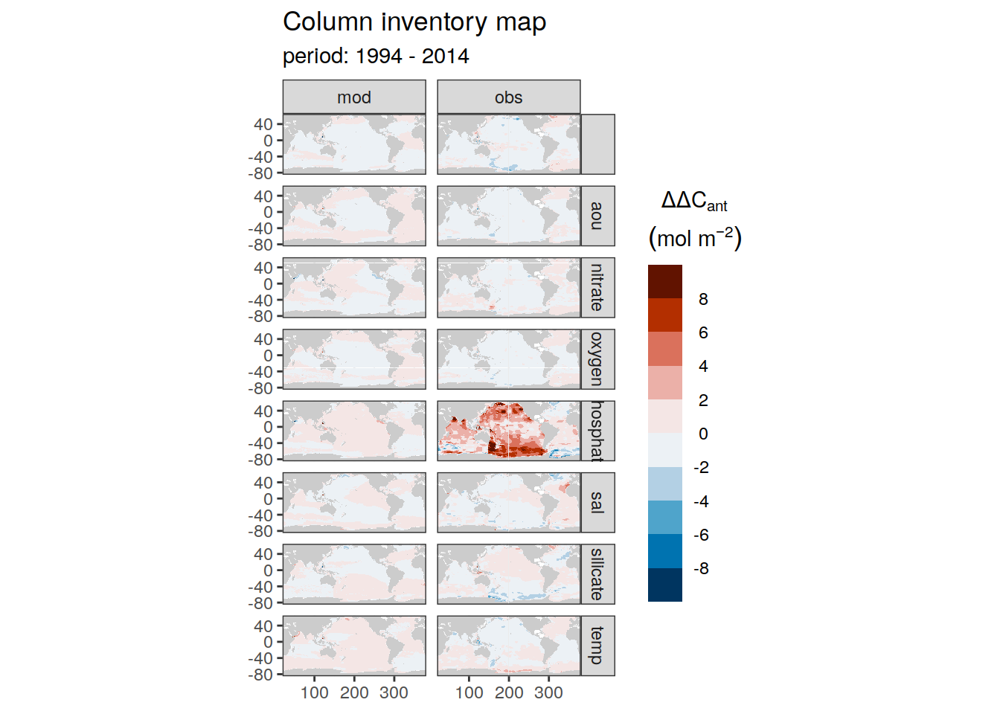

Column inventories
Jens Daniel Müller
10 January, 2022
Last updated: 2022-01-10
Checks: 7 0
Knit directory: emlr_obs_analysis/analysis/
This reproducible R Markdown analysis was created with workflowr (version 1.6.2). The Checks tab describes the reproducibility checks that were applied when the results were created. The Past versions tab lists the development history.
Great! Since the R Markdown file has been committed to the Git repository, you know the exact version of the code that produced these results.
Great job! The global environment was empty. Objects defined in the global environment can affect the analysis in your R Markdown file in unknown ways. For reproduciblity it’s best to always run the code in an empty environment.
The command set.seed(20210412) was run prior to running the code in the R Markdown file. Setting a seed ensures that any results that rely on randomness, e.g. subsampling or permutations, are reproducible.
Great job! Recording the operating system, R version, and package versions is critical for reproducibility.
Nice! There were no cached chunks for this analysis, so you can be confident that you successfully produced the results during this run.
Great job! Using relative paths to the files within your workflowr project makes it easier to run your code on other machines.
Great! You are using Git for version control. Tracking code development and connecting the code version to the results is critical for reproducibility.
The results in this page were generated with repository version d3903e6. See the Past versions tab to see a history of the changes made to the R Markdown and HTML files.
Note that you need to be careful to ensure that all relevant files for the analysis have been committed to Git prior to generating the results (you can use wflow_publish or wflow_git_commit). workflowr only checks the R Markdown file, but you know if there are other scripts or data files that it depends on. Below is the status of the Git repository when the results were generated:
Ignored files:
Ignored: .Rhistory
Ignored: .Rproj.user/
Ignored: data/
Ignored: output/other/
Ignored: output/publication/
Untracked files:
Untracked: analysis/child/budget_analysis_plot_data.Rmd
Untracked: analysis/child/budget_analysis_read_data.Rmd
Untracked: analysis/child/column_inventories_analysis_plot_data.Rmd
Untracked: analysis/child/column_inventories_analysis_read_data.Rmd
Untracked: analysis/child/zonal_sections_analysis_plot_data.Rmd
Untracked: analysis/child/zonal_sections_analysis_read_data.Rmd
Untracked: figure/bias_density_distribution-1.png
Untracked: figure/bias_density_distribution_ensemble-1.png
Untracked: figure/cases_absolute-1.png
Untracked: figure/cases_absolute-2.png
Untracked: figure/cases_absolute_depth-1.png
Untracked: figure/cases_absolute_depth_global-1.png
Untracked: figure/cases_absolute_global-1.png
Untracked: figure/cases_bias-1.png
Untracked: figure/cases_bias-2.png
Untracked: figure/cases_bias-3.png
Untracked: figure/cases_bias_depth-1.png
Untracked: figure/cases_bias_depth_global-1.png
Untracked: figure/cases_bias_global-1.png
Untracked: figure/cases_bias_global-2.png
Untracked: figure/cases_bias_rel_depth-1.png
Untracked: figure/cases_bias_rel_depth_global-1.png
Untracked: figure/composed_absolute_and_bias_figure-1.png
Untracked: figure/composed_figure-1.png
Untracked: figure/density_distributions-1.png
Untracked: figure/ensemble_deviation_from_mean-1.png
Untracked: figure/ensemble_deviation_from_mean-2.png
Untracked: figure/ensemble_deviation_from_mean-3.png
Untracked: figure/ensemble_mean-1.png
Untracked: figure/ensemble_mean-2.png
Untracked: figure/ensemble_mean_bias-1.png
Untracked: figure/ensemble_mean_bias-2.png
Untracked: figure/ensemble_mean_bias_global-1.png
Untracked: figure/ensemble_mean_bias_global-2.png
Untracked: figure/ensemble_mean_global-1.png
Untracked: figure/ensemble_mean_global-2.png
Untracked: figure/ensemble_mean_two_decades-1.png
Untracked: figure/ensemble_range-1.png
Untracked: figure/ensemble_sd-1.png
Untracked: figure/ensemble_sd_uncertainty-1.png
Untracked: figure/ensemble_sd_vs_bias-1.png
Untracked: figure/lat_grid_budget_all-1.png
Untracked: figure/lat_grid_budget_all-2.png
Untracked: figure/lat_grid_budget_ensemble-1.png
Untracked: figure/lon_grid_budget_all-1.png
Untracked: figure/lon_grid_budget_all-2.png
Untracked: figure/lon_grid_budget_all-3.png
Untracked: figure/lon_grid_budget_all-4.png
Untracked: figure/lon_grid_budget_ensemble-1.png
Untracked: figure/mean_tcant_over_atm_co2-1.png
Untracked: figure/slab_budgets-1.png
Untracked: figure/slab_budgets_bias-1.png
Untracked: figure/slab_budgets_bias-2.png
Untracked: figure/slab_budgets_bias-3.png
Untracked: figure/slab_budgets_individual-1.png
Untracked: figure/slab_budgets_individual-2.png
Untracked: figure/slab_budgets_individual-3.png
Untracked: figure/slab_budgets_spread-1.png
Untracked: figure/slab_budgets_spread-2.png
Untracked: figure/slab_budgets_spread-3.png
Untracked: figure/steady_state_comparison-1.png
Untracked: figure/steady_state_comparison-2.png
Untracked: figure/steady_state_comparison-3.png
Untracked: figure/steady_state_comparison-4.png
Untracked: figure/steady_state_comparison-5.png
Untracked: figure/summed_decades-1.png
Unstaged changes:
Modified: analysis/_site.yml
Deleted: analysis/bottomdepth_budgets.Rmd
Deleted: analysis/bottomdepth_column_inventories.Rmd
Deleted: analysis/bottomdepth_zonal_sections.Rmd
Deleted: analysis/canyon_b_cleaning_budgets.Rmd
Deleted: analysis/canyon_b_cleaning_column_inventories.Rmd
Deleted: analysis/canyon_b_cleaning_overview.Rmd
Deleted: analysis/canyon_b_cleaning_zonal_sections.Rmd
Deleted: analysis/child/budget_analysis.Rmd
Deleted: analysis/child/column_inventories_analysis.Rmd
Deleted: analysis/child/zonal_sections_analysis.Rmd
Deleted: analysis/cstar_correction_budgets.Rmd
Deleted: analysis/cstar_correction_column_inventories.Rmd
Deleted: analysis/cstar_correction_zonal_sections.Rmd
Deleted: analysis/cstar_scatter_budgets.Rmd
Deleted: analysis/cstar_scatter_column_inventories.Rmd
Deleted: analysis/cstar_scatter_zonal_sections.Rmd
Deleted: analysis/global_MLR_cleaning_budgets.Rmd
Deleted: analysis/global_MLR_cleaning_column_inventories.Rmd
Deleted: analysis/global_MLR_cleaning_zonal_sections.Rmd
Deleted: analysis/no_n_budgets.Rmd
Deleted: analysis/no_n_column_inventories.Rmd
Deleted: analysis/no_n_zonal_sections.Rmd
Deleted: analysis/no_p_budgets.Rmd
Deleted: analysis/no_p_column_inventories.Rmd
Deleted: analysis/no_p_zonal_sections.Rmd
Deleted: analysis/rarefication_budgets.Rmd
Deleted: analysis/rarefication_column_inventories.Rmd
Deleted: analysis/rarefication_zonal_sections.Rmd
Deleted: analysis/slab_budgets.Rmd
Deleted: analysis/slab_column_inventories.Rmd
Deleted: analysis/slab_zonal_sections.Rmd
Deleted: analysis/vif_budgets.Rmd
Deleted: analysis/vif_column_inventories.Rmd
Deleted: analysis/vif_zonal_sections.Rmd
Modified: code/Workflowr_project_managment.R
Note that any generated files, e.g. HTML, png, CSS, etc., are not included in this status report because it is ok for generated content to have uncommitted changes.
These are the previous versions of the repository in which changes were made to the R Markdown (analysis/MLR_predictor_column_inventories.Rmd) and HTML (docs/MLR_predictor_column_inventories.html) files. If you’ve configured a remote Git repository (see ?wflow_git_remote), click on the hyperlinks in the table below to view the files as they were in that past version.
| File | Version | Author | Date | Message |
|---|---|---|---|---|
| Rmd | d3903e6 | jens-daniel-mueller | 2022-01-10 | rebuild with child docs |
version_id_pattern <- "p"
config <- "MLR_predictors"1 Read files
# identify required version IDs
Version_IDs_1 <- list.files(path = "/nfs/kryo/work/jenmueller/emlr_cant/observations",
pattern = paste0("v_1", "p"))
Version_IDs_2 <- list.files(path = "/nfs/kryo/work/jenmueller/emlr_cant/observations",
pattern = paste0("v_2", "p"))
Version_IDs_3 <- list.files(path = "/nfs/kryo/work/jenmueller/emlr_cant/observations",
pattern = paste0("v_3", "p"))
Version_IDs <- c(Version_IDs_1, Version_IDs_2, Version_IDs_3)
print(Version_IDs) [1] "v_1p01" "v_1p02" "v_1p03" "v_1p04" "v_1p05" "v_1p06" "v_1p07" "v_1p08"
[9] "v_2p01" "v_2p02" "v_2p03" "v_2p04" "v_2p05" "v_2p06" "v_2p07" "v_2p08"
[17] "v_3p01" "v_3p02" "v_3p03" "v_3p04" "v_3p05" "v_3p06" "v_3p07" "v_3p08"for (i_Version_IDs in Version_IDs) {
# i_Version_IDs <- Version_IDs[1]
print(i_Version_IDs)
path_version_data <-
paste(path_observations,
i_Version_IDs,
"/data/",
sep = "")
# load and join data files
dcant_inv <-
read_csv(paste(path_version_data,
"dcant_inv.csv",
sep = ""))
dcant_inv_mod_truth <-
read_csv(paste(path_version_data,
"dcant_inv_mod_truth.csv",
sep = "")) %>%
filter(method == "total") %>%
select(-method)
dcant_inv_bias <-
read_csv(paste(path_version_data,
"dcant_inv_bias.csv",
sep = "")) %>%
mutate(Version_ID = i_Version_IDs)
dcant_inv <- bind_rows(dcant_inv,
dcant_inv_mod_truth) %>%
mutate(Version_ID = i_Version_IDs)
dcant_budget_lat_grid <-
read_csv(paste(path_version_data,
"dcant_budget_lat_grid.csv",
sep = "")) %>%
mutate(Version_ID = i_Version_IDs)
dcant_budget_lon_grid <-
read_csv(paste(path_version_data,
"dcant_budget_lon_grid.csv",
sep = "")) %>%
mutate(Version_ID = i_Version_IDs)
params_local <-
read_rds(paste(path_version_data,
"params_local.rds",
sep = ""))
params_local <- bind_cols(
Version_ID = i_Version_IDs,
MLR_predictors := str_c(params_local$MLR_predictors, collapse = "|"),
tref1 = params_local$tref1,
tref2 = params_local$tref2)
tref <- read_csv(paste(path_version_data,
"tref.csv",
sep = ""))
params_local <- params_local %>%
mutate(
median_year_1 = sort(tref$median_year)[1],
median_year_2 = sort(tref$median_year)[2],
duration = median_year_2 - median_year_1,
period = paste(median_year_1, "-", median_year_2)
)
if (exists("dcant_inv_all")) {
dcant_inv_all <- bind_rows(dcant_inv_all, dcant_inv)
}
if (!exists("dcant_inv_all")) {
dcant_inv_all <- dcant_inv
}
if (exists("dcant_inv_bias_all")) {
dcant_inv_bias_all <- bind_rows(dcant_inv_bias_all, dcant_inv_bias)
}
if (!exists("dcant_inv_bias_all")) {
dcant_inv_bias_all <- dcant_inv_bias
}
if (exists("dcant_budget_lat_grid_all")) {
dcant_budget_lat_grid_all <- bind_rows(dcant_budget_lat_grid_all, dcant_budget_lat_grid)
}
if (!exists("dcant_budget_lat_grid_all")) {
dcant_budget_lat_grid_all <- dcant_budget_lat_grid
}
if (exists("dcant_budget_lon_grid_all")) {
dcant_budget_lon_grid_all <- bind_rows(dcant_budget_lon_grid_all, dcant_budget_lon_grid)
}
if (!exists("dcant_budget_lon_grid_all")) {
dcant_budget_lon_grid_all <- dcant_budget_lon_grid
}
if (exists("params_local_all")) {
params_local_all <- bind_rows(params_local_all, params_local)
}
if (!exists("params_local_all")) {
params_local_all <- params_local
}
}[1] "v_1p01"
[1] "v_1p02"
[1] "v_1p03"
[1] "v_1p04"
[1] "v_1p05"
[1] "v_1p06"
[1] "v_1p07"
[1] "v_1p08"
[1] "v_2p01"
[1] "v_2p02"
[1] "v_2p03"
[1] "v_2p04"
[1] "v_2p05"
[1] "v_2p06"
[1] "v_2p07"
[1] "v_2p08"
[1] "v_3p01"
[1] "v_3p02"
[1] "v_3p03"
[1] "v_3p04"
[1] "v_3p05"
[1] "v_3p06"
[1] "v_3p07"
[1] "v_3p08"rm(dcant_inv,
dcant_inv_bias,
dcant_inv_mod_truth,
dcant_budget_lat_grid,
dcant_budget_lon_grid,
params_local,
tref)
# params_local_all <-
# params_local_all %>%
# mutate(period = factor(period, c("1994 - 2004", "2004 - 2014", "1994 - 2014")))dcant_inv_all <- dcant_inv_all %>%
filter(inv_depth == params_global$inventory_depth_standard)
dcant_budget_lat_grid_all <- dcant_budget_lat_grid_all %>%
filter(inv_depth == params_global$inventory_depth_standard)
dcant_budget_lon_grid_all <- dcant_budget_lon_grid_all %>%
filter(inv_depth == params_global$inventory_depth_standard)all_predictors <- c("saltempaouoxygenphosphatenitratesilicate")
params_local_all <- params_local_all %>%
mutate(MLR_predictors = str_remove_all(all_predictors,
MLR_predictors))dcant_budget_lat_grid_all <- dcant_budget_lat_grid_all %>%
pivot_wider(names_from = estimate,
values_from = value) %>%
filter(period != "1994 - 2014",
method == "total")
dcant_budget_lon_grid_all <- dcant_budget_lon_grid_all %>%
pivot_wider(names_from = estimate,
values_from = value) %>%
filter(period != "1994 - 2014",
method == "total")2 Uncertainty limit
sd_uncertainty_limit <- 43 Individual cases
3.1 Absoulte values
dcant_inv_all %>%
filter(data_source %in% c("mod", "obs"),
period != "1994 - 2014") %>%
group_by(data_source) %>%
group_split() %>%
# head(1) %>%
map(
~ p_map_cant_inv(df = .x,
var = "dcant",
subtitle_text = paste("data_source:",
unique(.x$data_source))) +
facet_grid(MLR_predictors ~ period) +
theme(axis.text = element_blank(),
axis.ticks = element_blank())
)[[1]]Warning: Raster pixels are placed at uneven vertical intervals and will be
shifted. Consider using geom_tile() instead.
[[2]]Warning: Raster pixels are placed at uneven vertical intervals and will be
shifted. Consider using geom_tile() instead.
p_dcant_inv_all_1994_2004 <-
dcant_inv_all %>%
filter(data_source %in% c("obs"),
period == "1994 - 2004") %>%
mutate(period = recode(period,
"1994 - 2004" = "Observation-based")) %>%
p_map_cant_inv(var = "dcant",
title_text = "1994 - 2004") +
facet_grid(MLR_predictors ~ period) +
theme(
axis.text = element_blank(),
axis.ticks = element_blank(),
strip.background.y = element_blank(),
strip.text.y = element_blank(),
legend.position = "left"
)3.2 Biases
dcant_inv_bias_all %>%
filter(period != "1994 - 2014") %>%
p_map_cant_inv(var = "dcant_bias",
col = "bias",
subtitle_text = "data_source: mod - mod_truth") +
facet_grid(MLR_predictors ~ period)Warning: Raster pixels are placed at uneven vertical intervals and will be
shifted. Consider using geom_tile() instead.
dcant_inv_bias_all %>%
filter(period == "1994 - 2014") %>%
p_map_cant_inv(var = "dcant_bias",
col = "bias",
subtitle_text = "data_source: mod - mod_truth") +
facet_grid(MLR_predictors ~ period)Warning: Raster pixels are placed at uneven vertical intervals and will be
shifted. Consider using geom_tile() instead.
p_dcant_inv_bias_all_1994_2004 <-
dcant_inv_bias_all %>%
filter(period == "1994 - 2004") %>%
mutate(period = recode(period,
"1994 - 2004" = "Model-based")) %>%
p_map_cant_inv(var = "dcant_bias",
col = "bias",
title_text = "Models") +
facet_grid(MLR_predictors ~ period) +
theme(
axis.text = element_blank(),
axis.ticks = element_blank(),
plot.title = element_blank()
)p_dcant_1994_2004 <-
p_dcant_inv_all_1994_2004 +
p_dcant_inv_bias_all_1994_2004
p_dcant_1994_2004Warning: Raster pixels are placed at uneven vertical intervals and will be
shifted. Consider using geom_tile() instead.
Warning: Raster pixels are placed at uneven vertical intervals and will be
shifted. Consider using geom_tile() instead.
# ggsave(plot = p_dcant_1994_2004,
# path = "output/other",
# filename = "inv_dcant_1994_2004_abs_bias.png",
# height = 8,
# width = 8)3.2.1 Density distribution
dcant_inv_bias_all %>%
filter(abs(dcant_bias) < 10) %>%
ggplot(aes(dcant_bias, col = MLR_predictors)) +
scale_color_brewer(palette = "Dark2") +
geom_vline(xintercept = 0) +
geom_density() +
facet_grid(period ~.)3.3 Lat grid budgets
dcant_budget_lat_grid_all %>%
group_split(data_source) %>%
# head(1) %>%
map(
~ ggplot(data = .x,
aes(lat_grid, dcant, fill = MLR_predictors)) +
geom_hline(yintercept = 0) +
geom_col(position = "dodge") +
coord_flip() +
scale_fill_brewer(palette = "Dark2") +
labs(title = paste("data_source:", unique(.x$data_source))) +
facet_grid(basin_AIP ~ period)
)[[1]]
[[2]]3.4 Lon grid budgets
dcant_budget_lon_grid_all %>%
group_split(data_source, period) %>%
# head(1) %>%
map(
~ ggplot(data = .x,
aes(lon_grid, dcant, fill = MLR_predictors)) +
geom_col(position = "dodge") +
scale_fill_brewer(palette = "Dark2") +
labs(title = paste(
"data_source:",
unique(.x$data_source),
"| period:",
unique(.x$period)
)) +
facet_grid(basin_AIP ~ .)
)[[1]]
[[2]]
[[3]]
[[4]]4 Ensemble
dcant_inv_ensemble <- dcant_inv_all %>%
filter(data_source %in% c("mod", "obs")) %>%
group_by(lat, lon, data_source, period) %>%
summarise(dcant_mean = mean(dcant),
dcant_sd = sd(dcant),
dcant_range = max(dcant)- min(dcant)) %>%
ungroup()`summarise()` has grouped output by 'lat', 'lon', 'data_source'. You can override using the `.groups` argument.dcant_lat_grid_ensemble <- dcant_budget_lat_grid_all %>%
filter(data_source %in% c("mod", "obs")) %>%
group_by(lat_grid, data_source, period, MLR_predictors) %>%
summarise(dcant = sum(dcant, na.rm = TRUE)) %>%
ungroup() %>%
group_by(lat_grid, data_source, period) %>%
summarise(dcant_mean = mean(dcant),
dcant_sd = sd(dcant),
dcant_max = max(dcant),
dcant_min = min(dcant)) %>%
ungroup()`summarise()` has grouped output by 'lat_grid', 'data_source', 'period'. You can override using the `.groups` argument.`summarise()` has grouped output by 'lat_grid', 'data_source'. You can override using the `.groups` argument.dcant_lon_grid_ensemble <- dcant_budget_lon_grid_all %>%
filter(data_source %in% c("mod", "obs")) %>%
group_by(lon_grid, data_source, period, MLR_predictors) %>%
summarise(dcant = sum(dcant, na.rm = TRUE)) %>%
ungroup() %>%
group_by(lon_grid, data_source, period) %>%
summarise(dcant_mean = mean(dcant),
dcant_sd = sd(dcant),
dcant_max = max(dcant),
dcant_min = min(dcant)) %>%
ungroup()`summarise()` has grouped output by 'lon_grid', 'data_source', 'period'. You can override using the `.groups` argument.`summarise()` has grouped output by 'lon_grid', 'data_source'. You can override using the `.groups` argument.4.1 Mean
p_map_cant_inv(
df = dcant_inv_ensemble %>%
filter(period != "1994 - 2014",
data_source == "obs"),
var = "dcant_mean",
subtitle_text = paste("Ensemble mean")
) +
facet_grid(period ~ .) +
theme(axis.text = element_blank(),
axis.ticks = element_blank())Warning: Raster pixels are placed at uneven vertical intervals and will be
shifted. Consider using geom_tile() instead.
p_map_cant_inv(
df = dcant_inv_ensemble %>%
filter(data_source == "obs",
period == "1994 - 2014"),
var = "dcant_mean",
title_text = paste("Ensemble mean"),
breaks = c(-Inf, seq(0, 28, 4), Inf)
) +
facet_grid(period ~ .) +
theme(
axis.text = element_blank(),
axis.ticks = element_blank(),
legend.position = "left"
)Warning: Raster pixels are placed at uneven vertical intervals and will be
shifted. Consider using geom_tile() instead.
4.2 Mean bias
dcant_inv_ensemble_bias <- full_join(
dcant_inv_ensemble %>%
filter(data_source == "mod") %>%
select(lat, lon, period, dcant_mean, dcant_sd),
dcant_inv_all %>%
filter(data_source == "mod_truth",
MLR_predictors == unique(dcant_inv_all$MLR_predictors)[1]) %>%
select(lat, lon, period, dcant)
)Joining, by = c("lat", "lon", "period")dcant_inv_ensemble_bias <- dcant_inv_ensemble_bias %>%
mutate(dcant_mean_bias = dcant_mean - dcant)
dcant_inv_ensemble_bias %>%
filter(period != "1994 - 2014") %>%
p_map_cant_inv(var = "dcant_mean_bias",
col = "bias",
subtitle_text = "Ensemble mean - mod_truth") +
facet_grid(period ~ .)Warning: Raster pixels are placed at uneven vertical intervals and will be
shifted. Consider using geom_tile() instead.
4.2.1 Density distribution
dcant_inv_bias_all %>%
ggplot() +
scale_color_manual(values = c("red", "grey")) +
geom_vline(xintercept = 0) +
geom_density(aes(dcant_bias, group = MLR_predictors, col = "Individual")) +
geom_density(data = dcant_inv_ensemble_bias,
aes(dcant_mean_bias, col = "Ensemble")) +
facet_grid(period ~.) +
coord_cartesian(xlim = c(-10, 10))4.3 Mean lat grid budgets
dcant_lat_grid_ensemble %>%
ggplot(aes(lat_grid, dcant_mean)) +
geom_hline(yintercept = 0) +
geom_col(position = "dodge",
fill = "grey80",
col = "grey20") +
geom_errorbar(aes(
ymin = dcant_min,
ymax = dcant_max
),
col = "grey20",
width = 0) +
scale_color_brewer(palette = "Set1") +
coord_flip() +
scale_fill_brewer(palette = "Dark2") +
facet_grid(data_source ~ period)4.4 Mean lon grid budgets
dcant_lon_grid_ensemble %>%
ggplot(aes(lon_grid, dcant_mean)) +
geom_col(position = "dodge",
fill = "grey80",
col = "grey20") +
geom_errorbar(aes(
ymin = dcant_min,
ymax = dcant_max
),
col = "grey20",
width = 0) +
facet_grid(data_source ~ period)
4.5 Standard deviation
p_map_cant_inv(
df = dcant_inv_ensemble,
var = "dcant_sd",
breaks = c(seq(0, 4, 0.4), Inf),
subtitle_text = paste("Ensemble SD")
) +
facet_grid(period ~ data_source)Warning: Raster pixels are placed at uneven vertical intervals and will be
shifted. Consider using geom_tile() instead.
4.6 SD as uncertainty
uncertainty_grid <- dcant_inv_ensemble %>%
filter(dcant_sd > sd_uncertainty_limit) %>%
distinct(lon, lat, data_source, period)
uncertainty_grid <- m_grid_horizontal_coarse(uncertainty_grid) %>%
distinct(lon_grid, lat_grid, data_source, period)
map +
geom_point(data =
uncertainty_grid,
aes(lon_grid, lat_grid),
shape = 3) +
facet_grid(period ~ data_source)Warning: Raster pixels are placed at uneven vertical intervals and will be
shifted. Consider using geom_tile() instead.4.7 SD vs abs bias
4.7.1 2D bin
dcant_inv_ensemble_bias %>%
ggplot(aes(abs(dcant_mean_bias), dcant_sd)) +
geom_bin2d() +
scale_fill_viridis_c() +
facet_grid(. ~ period)4.7.2 Density distributions
legend_title = expression(Delta * C[ant]~(mol~m^2))
dcant_density_distribution_bias <- dcant_inv_ensemble_bias %>%
select(dcant_mean_bias, period) %>%
pivot_longer(dcant_mean_bias,
names_to = "estimate",
values_to = "value") %>%
mutate(data_source = "mod")
dcant_density_distribution <- dcant_inv_ensemble %>%
select(dcant_mean, dcant_sd, period, data_source) %>%
pivot_longer(dcant_mean:dcant_sd,
names_to = "estimate",
values_to = "value")
dcant_density_distribution <- bind_rows(dcant_density_distribution,
dcant_density_distribution_bias) %>%
mutate(period = factor(period, c("1994 - 2004", "2004 - 2014", "1994 - 2014")))
p_ensemble_distribution <-
dcant_density_distribution %>%
filter(period != "1994 - 2014") %>%
mutate(
data_source = recode(data_source,
mod = "Model",
obs = "Observations"),
estimate = recode(
estimate,
dcant_mean = "Mean",
dcant_mean_bias = "Bias",
dcant_sd = "SD"
)
) %>%
ggplot(aes(value, fill = estimate, col = estimate)) +
scale_color_brewer(palette = "Dark2") +
scale_fill_brewer(palette = "Dark2") +
geom_density(alpha = 0.2) +
facet_grid(period ~ data_source) +
labs(title = "Density distributions of column inventory ensemble properties",
x = legend_title,
y = "Density of 1x1° grid cells") +
coord_cartesian(ylim = c(0, 0.5),
xlim = c(-5, 32))
# ggsave(plot = p_ensemble_distribution,
# path = "output/other",
# filename = "inv_ensemble_distribution.png",
# height = 4,
# width = 8)
p_ensemble_distribution <-
dcant_density_distribution %>%
filter(data_source == "obs") %>%
mutate(
data_source = recode(data_source,
mod = "Model",
obs = "Observations"),
estimate = recode(
estimate,
dcant_mean = "Mean",
dcant_mean_bias = "Bias",
dcant_sd = "SD"
)
) %>%
ggplot(aes(value, fill = estimate, col = estimate)) +
scale_color_brewer(palette = "Dark2") +
scale_fill_brewer(palette = "Dark2") +
geom_density(alpha = 0.2) +
facet_grid(period ~ data_source) +
labs(title = "Density distributions of column inventory ensemble properties",
x = legend_title,
y = "Density of 1x1° grid cells") +
coord_cartesian(ylim = c(0, 0.5),
xlim = c(-5, 32))
p_ensemble_distribution# ggsave(plot = p_ensemble_distribution,
# path = "output/other",
# filename = "inv_ensemble_distribution_all.png",
# height = 6,
# width = 5)4.8 Range
p_map_cant_inv(
df = dcant_inv_ensemble,
var = "dcant_range",
breaks = c(seq(0,8,0.8), Inf),
subtitle_text = paste("Ensemble range")
) +
facet_grid(period ~ data_source)Warning: Raster pixels are placed at uneven vertical intervals and will be
shifted. Consider using geom_tile() instead.4.9 Composed figure
uncertainty_grid <- uncertainty_grid %>%
filter(data_source == "obs")
p_map_94 <- p_map_cant_inv(
df = dcant_inv_ensemble %>%
filter(period == "1994 - 2004",
data_source == "obs"),
var = "dcant_mean",
subtitle_text = NULL,
title_text = NULL
) +
geom_point(
data =
uncertainty_grid %>% filter(period == "1994 - 2004"),
aes(lon_grid, lat_grid),
shape = 3,
col = "red"
) +
theme(
axis.text = element_blank(),
axis.ticks = element_blank(),
legend.position = "left"
) +
facet_grid(period ~ .,
switch = "y")
p_map_04 <- p_map_cant_inv(
df = dcant_inv_ensemble %>%
filter(period == "2004 - 2014",
data_source == "obs"),
var = "dcant_mean",
subtitle_text = NULL,
title_text = NULL
) +
geom_point(
data =
uncertainty_grid %>% filter(period == "2004 - 2014"),
aes(lon_grid, lat_grid),
shape = 3,
col = "red"
) +
theme(
axis.text = element_blank(),
axis.ticks = element_blank(),
legend.position = "left"
) +
facet_grid(period ~ .,
switch = "y")
p_lon_94 <- dcant_lon_grid_ensemble %>%
filter(data_source == "obs",
period == "1994 - 2004") %>%
ggplot(aes(lon_grid, dcant_mean)) +
geom_col(position = "dodge",
fill = "grey80",
col = "grey20") +
geom_errorbar(aes(ymin = dcant_min,
ymax = dcant_max),
col = "grey20",
width = 0) +
scale_y_continuous(
limits = c(0, 1),
expand = c(0, 0),
name = expression(Delta * C[ant] ~ (PgC)),
position = "right"
) +
scale_x_continuous(name = "Longitude (°E)",
limits = c(20, 380),
expand = c(0, 0)) +
theme(
axis.title.x = element_blank(),
axis.text.x = element_blank(),
axis.ticks.x = element_blank()
)
# coord_fixed(ratio = 100)
p_lon_04 <- dcant_lon_grid_ensemble %>%
filter(data_source == "obs",
period == "2004 - 2014") %>%
ggplot(aes(lon_grid, dcant_mean)) +
geom_col(position = "dodge",
fill = "grey80",
col = "grey20") +
geom_errorbar(aes(
ymin = dcant_min,
ymax = dcant_max
),
col = "grey20",
width = 0) +
scale_y_continuous(limits = c(0,1), expand = c(0,0),
name = expression(Delta*C[ant]~(PgC)),
position = "right") +
scale_x_continuous(name = "Longitude (°E)",
limits = c(20,380), expand = c(0,0)) +
theme(title = element_blank())
# coord_fixed(ratio = 100)
p_lat_94 <- dcant_lat_grid_ensemble %>%
filter(data_source == "obs",
period == "1994 - 2004") %>%
ggplot(aes(dcant_mean, lat_grid)) +
geom_col(
position = "dodge",
fill = "grey80",
col = "grey20",
orientation = "y"
) +
geom_errorbar(aes(xmin = dcant_min,
xmax = dcant_max),
col = "grey20",
width = 0) +
scale_x_continuous(
limits = c(0, 2.8),
expand = c(0, 0),
name = expression(Delta * C[ant] ~ (PgC))
) +
scale_y_continuous(
name = "Latitude (°N)",
limits = c(-80, 65),
expand = c(0, 0),
position = "right"
) +
theme(
axis.title.x = element_blank(),
axis.text.x = element_blank(),
axis.ticks.x = element_blank()
)
# coord_fixed(ratio = 5e-2)
p_lat_04 <- dcant_lat_grid_ensemble %>%
filter(data_source == "obs",
period == "2004 - 2014") %>%
ggplot(aes(dcant_mean, lat_grid)) +
geom_col(position = "dodge",
fill = "grey80",
col = "grey20",
orientation = "y") +
geom_errorbar(aes(xmin = dcant_min,
xmax = dcant_max),
col = "grey20",
width = 0) +
scale_x_continuous(
limits = c(0, 2.8),
expand = c(0, 0),
name = expression(Delta * C[ant] ~ (PgC))
) +
scale_y_continuous(name = "Latitude (°N)",
limits = c(-80, 65),
expand = c(0, 0),
position = "right")
t_94 <- grid::textGrob("1994 -\n2004")
t_04 <- grid::textGrob("2004 -\n2014")
layout <- "
BBB#
AAAD
AAAD
CCCE
CCCE
GGG#
"
wrap_plots(B = p_lon_94, A = p_map_94, D = p_lat_94,
G = p_lon_04, C = p_map_04, E = p_lat_04,
design = layout,
guides = "collect")&
theme(legend.position = "left")Warning: Raster pixels are placed at uneven vertical intervals and will be
shifted. Consider using geom_tile() instead.
Warning: Raster pixels are placed at uneven vertical intervals and will be
shifted. Consider using geom_tile() instead.# ggsave("output/publication/Fig_column_inventories.png",
# width=11,
# height=9.27)5 Cases vs ensemble
5.1 Offset from mean
dcant_inv_all <- full_join(dcant_inv_all,
dcant_inv_ensemble)Joining, by = c("data_source", "lon", "lat", "period")dcant_inv_all <- dcant_inv_all %>%
mutate(dcant_offset = dcant - dcant_mean)
dcant_inv_all %>%
filter(data_source %in% c("mod", "obs")) %>%
group_by(period) %>%
group_split() %>%
# head(1) %>%
map(
~ p_map_cant_inv(df = .x,
var = "dcant_offset",
col = "bias",
subtitle_text = paste("period:",
unique(.x$period))) +
facet_grid(MLR_predictors ~ data_source)
)[[1]]Warning: Raster pixels are placed at uneven vertical intervals and will be
shifted. Consider using geom_tile() instead.
[[2]]Warning: Raster pixels are placed at uneven vertical intervals and will be
shifted. Consider using geom_tile() instead.
[[3]]Warning: Raster pixels are placed at uneven vertical intervals and will be
shifted. Consider using geom_tile() instead.
sessionInfo()R version 4.0.3 (2020-10-10)
Platform: x86_64-pc-linux-gnu (64-bit)
Running under: openSUSE Leap 15.3
Matrix products: default
BLAS: /usr/local/R-4.0.3/lib64/R/lib/libRblas.so
LAPACK: /usr/local/R-4.0.3/lib64/R/lib/libRlapack.so
locale:
[1] LC_CTYPE=en_US.UTF-8 LC_NUMERIC=C
[3] LC_TIME=en_US.UTF-8 LC_COLLATE=en_US.UTF-8
[5] LC_MONETARY=en_US.UTF-8 LC_MESSAGES=en_US.UTF-8
[7] LC_PAPER=en_US.UTF-8 LC_NAME=C
[9] LC_ADDRESS=C LC_TELEPHONE=C
[11] LC_MEASUREMENT=en_US.UTF-8 LC_IDENTIFICATION=C
attached base packages:
[1] stats graphics grDevices utils datasets methods base
other attached packages:
[1] ggforce_0.3.3 metR_0.9.0 scico_1.2.0 patchwork_1.1.1
[5] collapse_1.5.0 forcats_0.5.0 stringr_1.4.0 dplyr_1.0.5
[9] purrr_0.3.4 readr_1.4.0 tidyr_1.1.3 tibble_3.1.3
[13] ggplot2_3.3.5 tidyverse_1.3.0 workflowr_1.6.2
loaded via a namespace (and not attached):
[1] fs_1.5.0 lubridate_1.7.9 RColorBrewer_1.1-2
[4] httr_1.4.2 rprojroot_2.0.2 tools_4.0.3
[7] backports_1.1.10 bslib_0.2.5.1 utf8_1.1.4
[10] R6_2.5.0 DBI_1.1.0 colorspace_2.0-2
[13] withr_2.3.0 tidyselect_1.1.0 compiler_4.0.3
[16] git2r_0.27.1 cli_3.0.1 rvest_0.3.6
[19] xml2_1.3.2 labeling_0.4.2 sass_0.4.0
[22] scales_1.1.1 checkmate_2.0.0 digest_0.6.27
[25] rmarkdown_2.10 pkgconfig_2.0.3 htmltools_0.5.1.1
[28] dbplyr_1.4.4 highr_0.8 rlang_0.4.11
[31] readxl_1.3.1 rstudioapi_0.13 jquerylib_0.1.4
[34] generics_0.1.0 farver_2.0.3 jsonlite_1.7.1
[37] magrittr_1.5 Matrix_1.2-18 Rcpp_1.0.5
[40] munsell_0.5.0 fansi_0.4.1 lifecycle_1.0.0
[43] stringi_1.5.3 whisker_0.4 yaml_2.2.1
[46] MASS_7.3-53 grid_4.0.3 blob_1.2.1
[49] parallel_4.0.3 promises_1.1.1 crayon_1.3.4
[52] lattice_0.20-41 haven_2.3.1 hms_0.5.3
[55] knitr_1.33 pillar_1.6.2 reprex_0.3.0
[58] glue_1.4.2 evaluate_0.14 RcppArmadillo_0.10.1.2.0
[61] data.table_1.14.0 modelr_0.1.8 vctrs_0.3.8
[64] tweenr_1.0.2 httpuv_1.5.4 cellranger_1.1.0
[67] gtable_0.3.0 polyclip_1.10-0 assertthat_0.2.1
[70] xfun_0.25 broom_0.7.9 RcppEigen_0.3.3.7.0
[73] later_1.2.0 viridisLite_0.3.0 ellipsis_0.3.2
[76] here_0.1